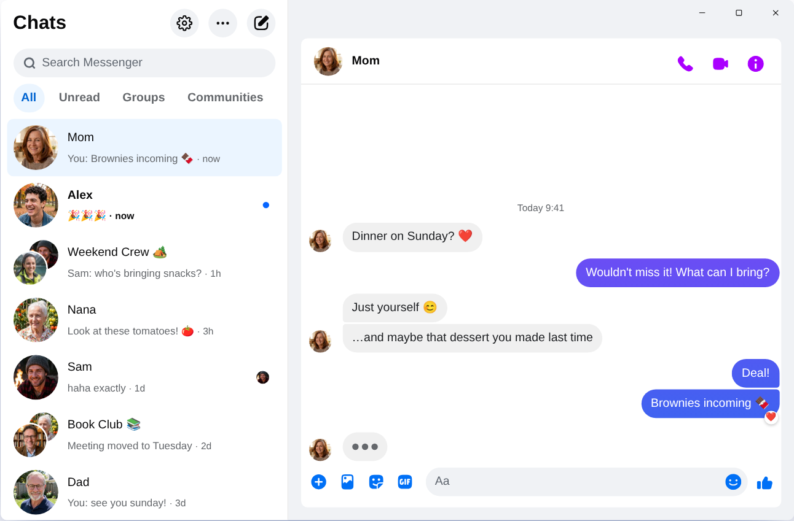

Chatpane for Messenger / Windows
Updated November 2026
A Messenger desktop app for Windows 11 and 10
Meta removed the Messenger app from the Microsoft Store and shut it down on December 15, 2025. If Messenger now opens the Facebook app or a browser instead, here are your options.
Free and open source · Windows 10 and 11 · x64 and ARM64
The short answer
The Messenger app for Windows is gone, and you can no longer download it from the Microsoft Store. Meta now points Windows users to the Facebook app or to facebook.com/messages in a browser.
If you want Messenger on its own instead, Chatpane for Messenger (formerly Carrier) is a free, open-source desktop app that opens your chats in their own window, hides the rest of Facebook, and adds taskbar badges and notifications you can reply from. It is unofficial and not made by Meta.
What happened to Messenger for Windows
In 2024 Meta replaced the native Windows app with a progressive web app. In October 2025 it announced that the Messenger desktop apps would be retired and removed them from the Microsoft Store, and on December 15, 2025 they stopped working. Since then, Messenger on a Windows PC means the Facebook app or a browser. In April 2026 Meta also retired messenger.com, which now redirects to facebook.com/messages. The full timeline has the details and sources.
If you used Messenger without a Facebook account, desktop access ended with messenger.com. Meta says those accounts can keep chatting in the mobile app. Every Windows option below, Chatpane included, needs an account that can sign in at facebook.com.
Your options
Ways to use Messenger on Windows
Compare
Windows options side by side
| Chatpane | Facebook app | Messenger Next | Caprine | |
|---|---|---|---|---|
| Shows only your chats | Yes | No, all of Facebook | Yes | Built for messenger.com |
| Windows download | 3.0 MB | Microsoft Store | 4.1 MB | 82.3 MB |
| Built on | Edge WebView2 | Not public | Edge WebView2 | Electron (bundled Chromium) |
| Source code | Open (MIT) | Closed | Closed | Open (MIT) |
| Latest release | November 2026 | Microsoft Store updates | September 2026 | January 2026 |
From each project's latest release on GitHub, checked November 8, 2026. Sizes are the 64-bit Windows installers.
Chatpane on Windows
Chatpane opens the real Messenger, the same one from your browser, so calls, group chats, reactions, photos and your full history are all there and stay in sync with your phone. On Windows it adds:
- Only Messenger. Facebook's Feed, Reels, Marketplace and global search are hidden. Chatpane draws its own minimize, maximize and close buttons instead of a title bar.
- Notifications that do something. Reply, react, mark as read or mute right from the notification. You can pause them for an hour or until tomorrow from the tray.
- Taskbar and tray. An unread count or dot on the taskbar icon, recent conversations in the jump list, start on login, start in the tray and hide on close.
- Keyboard first.
Ctrl+1toCtrl+9jump to conversations,Ctrl+Ksearches, and an optionalCtrl+Shift+Mhotkey shows or hides Chatpane from anywhere. - Privacy. Hide that you're typing, hide names and avatars for screen sharing, and block Facebook's analytics requests (on by default).
- Your look. Light, dark or system appearance, nine built-in themes, an accent color and four app icons.

How to install it
- Download the 64-bit installer. On a Windows on ARM PC, use the ARM64 installer instead.
- Run it. Chatpane's Windows builds are not code signed yet, so SmartScreen may say "Windows protected your PC" with an unknown publisher. Choose More info, then Run anyway. Only download Chatpane from its GitHub releases page or winget.
- Sign in with your usual Facebook account. Your chats appear right away.
Prefer a package manager? Run winget install kristofferR.Chatpane. Don't want to install anything? The portable .zip runs without an installer. Chatpane checks for signed updates and shows the release notes before you install one.
FAQ
Windows questions
Can I still get the Messenger app from the Microsoft Store?
No. Meta removed it in October 2025 and it stopped working on December 15, 2025. Guides that tell you to install it from the Microsoft Store are out of date. Meta's own replacement on Windows is the Facebook app.
Why does Windows warn about an unknown publisher?
Chatpane's Windows builds are currently unsigned while code signing is being arranged, so SmartScreen does not recognize the publisher yet. The complete source code is public, and updates inside the app are cryptographically verified before they install.
Does it work on Windows 10?
Yes, on Windows 10 and 11. Chatpane uses Microsoft's WebView2 runtime. It comes with Windows 11, and on Windows 10 the installer downloads it if it is missing.
Do voice and video calls work?
Yes. It is the full Messenger, so calls open in their own window, just as they do on facebook.com.
Is Chatpane made by Meta?
No. Chatpane for Messenger is an unofficial, independent project, not affiliated with Meta. Your messages still go through Messenger itself, so Meta's terms apply there. Chatpane adds no tracking of its own.
Get Chatpane for Windows
Free and open source. A 3 MB installer for Windows 10 and 11.
Every download, with checksums, is on GitHub · Mac and Linux